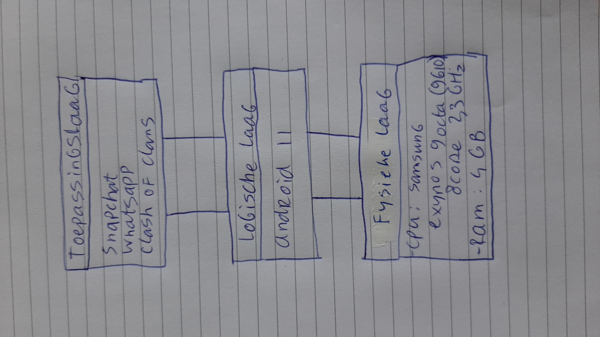

daniel's super site
Het drielagenmodel

Een computer bestaat uit drie lagen: de fysieke laag, de logische laag en de toepassingslaag.
De computer zelf is de fysieke laag, dus de onderdelen die je zelf kunt vastpakken met je handen.
Windows, macOS en linux zijn voorbeelden van de logische laag. Hierin zit het programma dat alle apps verbindt met je computer en alle input en output doorgeeft aan de onderdelen.
De fysieke laag bestaat uit de randapparatuur (beeldscherm, muis, etcetera) en de onderdelen in de computer zelf, zoals de voeding, een moederbord, het RAM-geheugen en de CPU.
Op deze pagina kun je meer informatie vinden over de CPU, ook wel processor genoemd.
--> Coommunicatie tussen de verschillende lagen